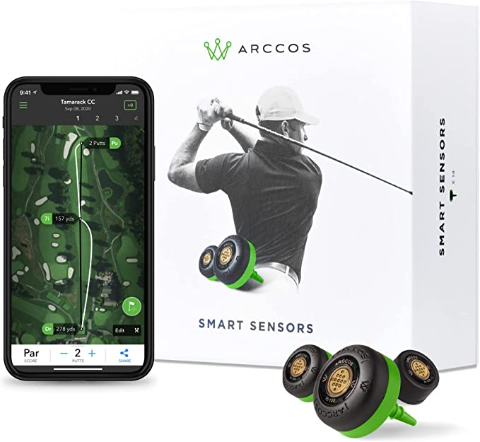
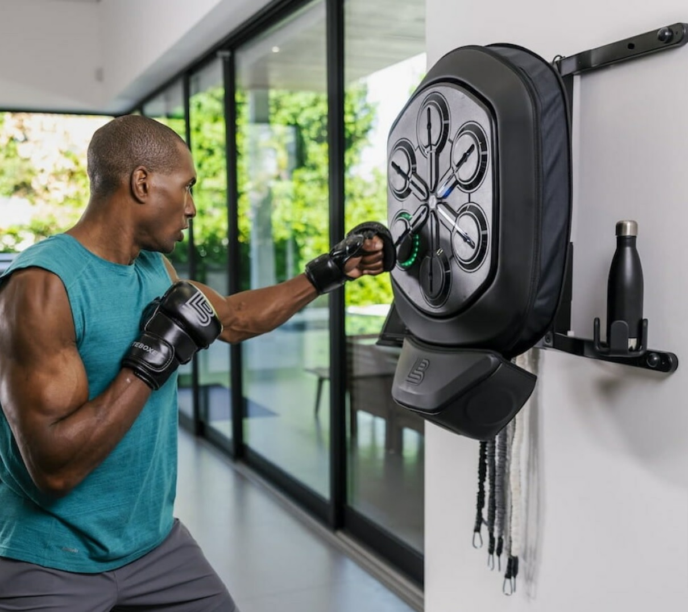
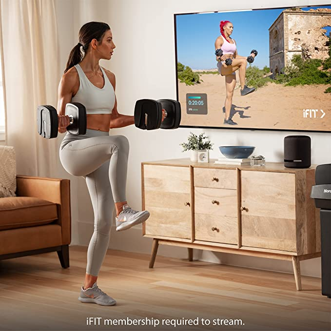

Arccos Smart Golf Sensors GEN 3+
Capture 98% of all tee shots with the Arccos Smart Golf Sensors GEN 3+. Powered by AI, this golf accessory helps pinpoint your shots throughout an entire golf course. Moreover, these Arccos golf sensors provide accurate shot tracking to help you become a winner. In particular, with strokes gained analytics, you’ll know exactly what areas of the game you need to improve for the best results. Best of all, you’ll be able to see how many strokes you gain or lose with every club. Furthermore, the GPS rangefinder provides information on wind speed and direction, temperature, humidity, and altitude.
Order Product

Liteboxer Wall Mount boxing equipment
Working out just got more convenient and challenging with the Liteboxer Wall Mount boxing equipment. It boasts a smaller footprint for home training. So you can exercise with minimal floor space. This boxing equipment is compatible with brick, concrete, cinder brick, and wooden studs with drywall. Best of all, you can mount it at any height to suit you. And, once installed, it offers an adjustable range of 14 inches, which is suitable for fighters between 5’2″ and 6’4″. Finally, the Liteboxer Wall Mount includes 2 pairs of gloves, 2 pairs of wraps, a non-slip mat, and resistant bands.Order Product

NordicTrack iSelect Adjustable Dumbbells
Work out the smarter way with the NordicTrack iSelect Adjustable Dumbbells. Replacing 20 individual dumbbells with 1 smart workout station, it provides a 5–50-lb range. And each plate weighs 5 lbs, so you can make slight weight adjustments to reach your goals. Moreover, the NordicTrack iSelect Adjustable Dumbbells provide a digital readout of your current weight selection. Above all,
this set is compatible with Alexa, so you can make on-screen weight adjustments via voice prompts. Order Product